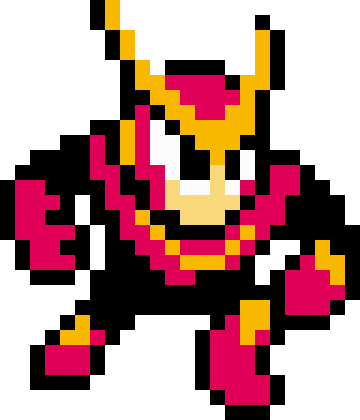
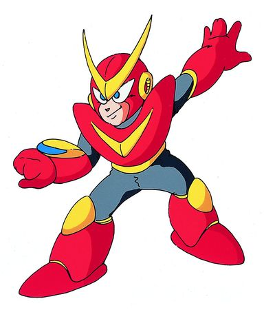

Tips to Beat the Boss
- Best Time to Attack: Fire at him right after he finishes a dash. He pauses briefly before starting his next burst of movement, giving you a small but reliable opening.
- Manage His Speed: Quick Man’s erratic dashes are his biggest threat. Keep distance so you have room to react rather than getting cornered.
- The Lure Trick: If you stay mid‑range, he tends to dash toward you in predictable angles. Use this to bait him into passing by you, then turn and shoot as he recovers.
- Weakness: The Time Stopper drains a large portion of his health instantly. It won’t finish him completely, but it makes the fight dramatically easier.
- Pattern: He usually chains several fast dashes, pauses, then repeats. His movement isn’t fully fixed, but the pause windows are consistent.
- Start with Quick Man: Many players save him for later because his stage is difficult, but beating him early gives you the Time Stopper, which is extremely useful in other stages.
- Jump Strategy: Jump only when necessary—his dashes are fast enough that jumping too often makes you easier to hit. Short hops help you adjust without losing control.
- Stage Tips: The laser beam sections are the real challenge. Memorize the safe drops, keep moving, and don’t hesitate—hesitation is what gets you vaporized.